金ピラ山
| 日付 | 2011年1月15日（土） |
|---|---|
| 山域 | 道志山塊 |
| メンバー | 友人（男4） |
| 山行形態 | 日帰り |
| アクセス | 電車、バス |
| ルート (Map) | 四方津駅→大丸→金ピラ山→秋山温泉 |
古い友達4名で一緒に山に行くことにする。
10:04 四方津駅到着。標高235m。
駅から直接登れる山なので、集合したら歩き始める。
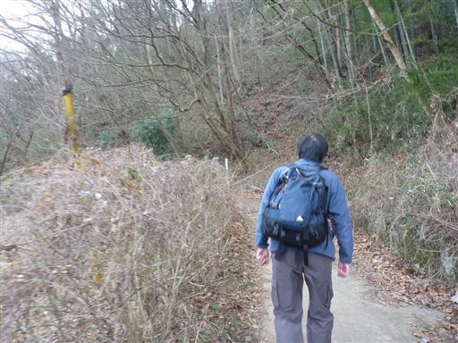
大丸までは昨年末に登った矢平山のときと同じコースだ。
最近なぜかこのコースを歩くことが多い。
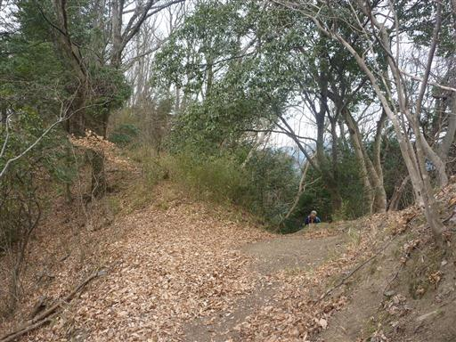
今日は曇り空。遠くの景色は望めないが、微かに富士山が見える。
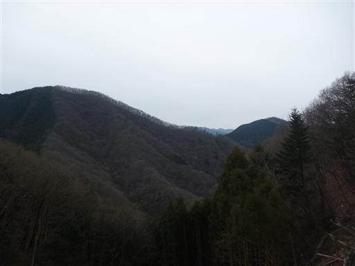
植物から出た水分が凍ってできた霜柱。非常に美しい。
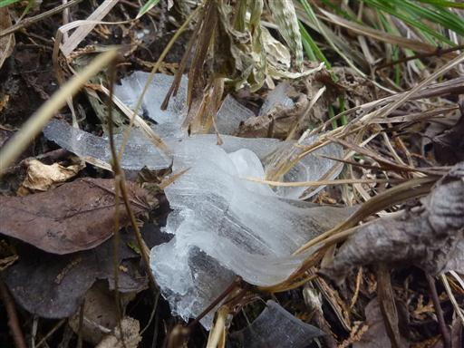
11:42 大丸山頂到着。ここで昼食をとることにする。
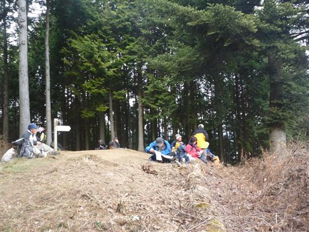
山頂からの展望。天気が良くないのでパッとしない展望だ。
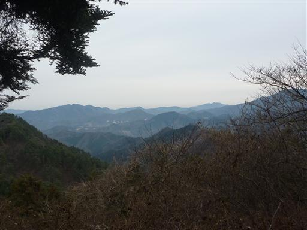
ここから先はまだ歩いたことのないルート。
なぜか自分の持っている地図にはこのルートが描かれていない。
デン笠、金ピラ山とあまり馴染みの無い名前の小ピークが続く。
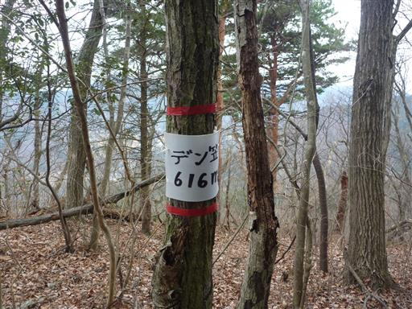
13:16 金ピラ山山頂到着。展望はほとんどない。
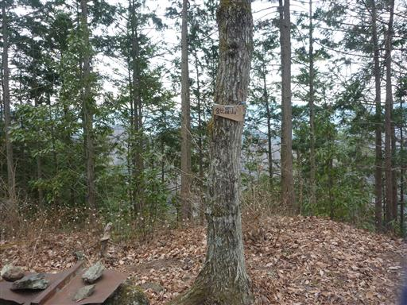
足元には粗末な祠らしきものがある。
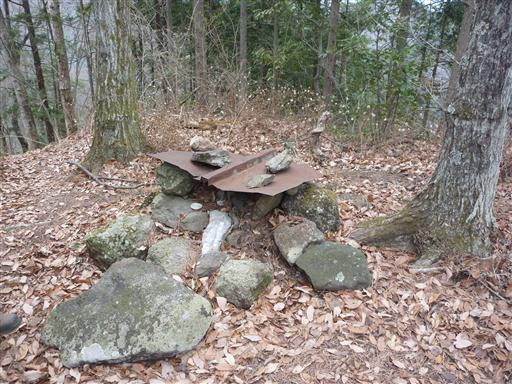
ここから先の下山路は急降下。葉が積もっていて非常に滑りやすい。
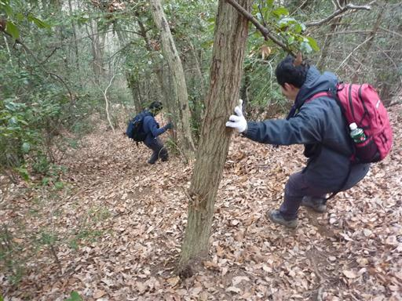
下山。山に囲まれた秋山川沿いのさびしい集落が続く。
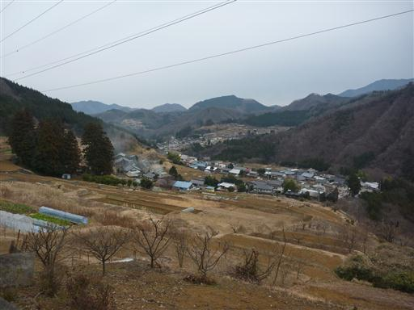
人が乗るのは不可能なほど小さなショベルカー。どうやって使うのだろうか？
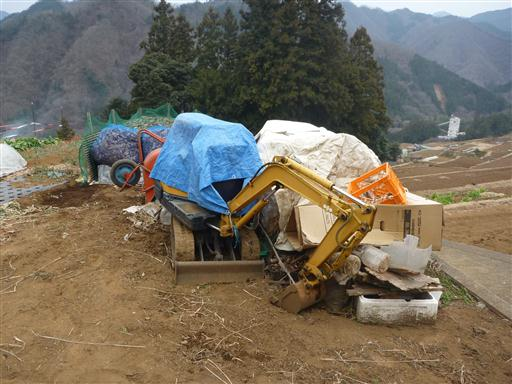
14:18 秋山温泉到着。標高285m。
久しぶりの友人交えた楽しい山行だった。
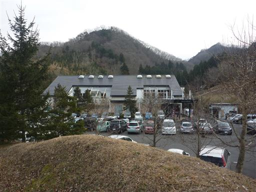